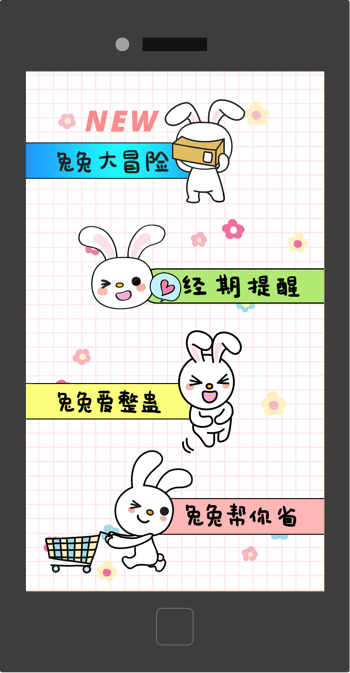
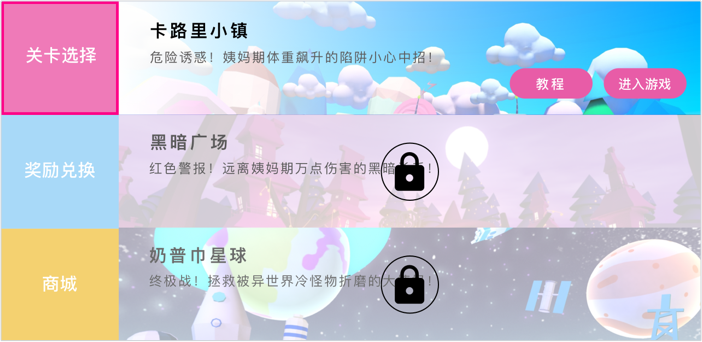
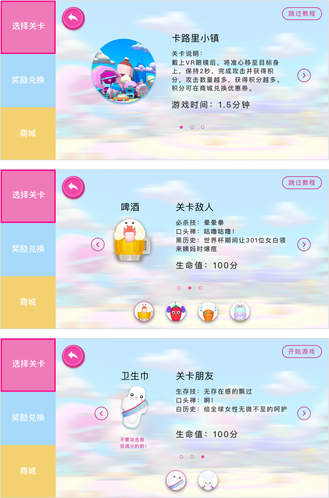

Process
Every design should have a reason behind it
After our team finished the game concept design, we delivered our ideas to Ant Hive. Their game designers
were responsible for all visual design of the VR game, such as moving, hitting, and killing status of
each monster. Then, I began to work on the pre-game, game-in-progress, and post-game workflow design.
Below are requirements for my wireframe:
- The game feature should be easily noticed and the game can be quickly started.
- Creating a friendly experience for users to transfer from non-VR part to VR part
- Adding a SOFY E-Commerce entry to boost product sales
To make the game feature outstanding, I added the new game entry button to the top of the existing app and
marked a “NEW” text to make it outstanding. After users click the button, they can get into the game.
And during the loading time, I added a loading image to keep their interest.

For the home page, I placed the side navigation bar to leave enough space for the main content. The
navigation bar contains 3 tabs：selecting levels, points redemption, and E-commerce. The default active
tab is selecting levels. For selecting levels panel, it shows three levels which contain level’s title,
level’s introduction, and functional buttons, such as tutorial button and start button. If the level is
locked, I put a lock icon on the top of the panel.

After users click the tutorial button, they go to the tutorial page, which has two parts —about friend
and about enemy. For each part, users can click the arrow to switch characters. Also, users have the option of jumping tutorial; And I provided start button on the last panel. For the tutorial
panel, at first I overlooked several problems, which I will explain later.

For the game flow, after users click the start button, the interface notifies users to put their smartphone
into VR glasses to play the game.
Because there is a time-delay when users wear VR glasses, the game won’t start until users aim at the start
button for 1 second. After one level finishes, users go to the game-over page which presents all
information from this round. And I also provided a progress bar to tell users how many points they still
need to get to unlock next level.
On the redemption page, users can view their current points and redemption history. But due to the
imitation of business issues, they can only redeem all points at once. I didn’t think it was a good
marketing idea. I gave feedback to my director that I wanted users can directly user coupons to redeem
SOFY’s products, which obviously produce more motivation for users to play the game and attract more
people to use SOFY products. However, my director told me we could do nothing about this part.
Then I realized that design is not only about designing a product, but also relates to
balancing business goals and design goals.